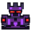

AMEAÇA DETECTADA // ALVO TRAVADO
ARTILHEIRO
Mira o maior bloco. Ataque em linha.
LINHA HORIZONTAL
O maior bloco na linha será atingido.
FASE 01 · SUBESTAÇÃOPreserve um bloco 32 após o ataque.EXTRA · Conclua em até 8 turnos
TURNO01/16
GRADE // 4×4DESLIZE DISPONÍVEL
ÁREA DE ATAQUE ALVO PREVISTO PROTEGIDO / TRAVADO
UNIDADE OPERACIONALATLASÓptica · Descarga · Passo
PV DO ROBÔ10/10
1 REAÇÃO DISPONÍVELPRÓXIMA PEÇA 2 · CASA SORTEADA DEPOIS
Faça um deslize e, se quiser, uma reação antes ou depois.
Óptica: a área e as perdas previstas estão marcadas na grade.